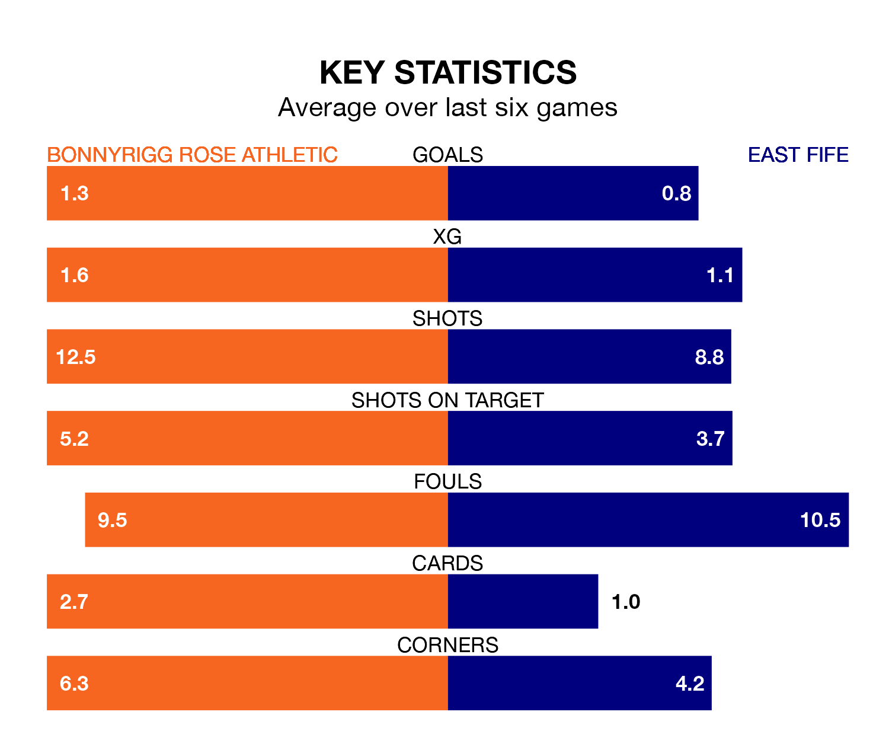

East Fife travel to Bonnyrigg Rose Athletic on Saturday in League Two.
The visitors come into the game on the back of a draw in their last match, having tied with Stenhousemuir 1-1 at home, with a goal from Nathan Austin.
Bonnyrigg Rose, meanwhile, won their last match, 2-0 against Elgin City, with their goals scored by Conor Doan.
In the last 10 years, Bonnyrigg Rose and East Fife have played each other on six occasions. Bonnyrigg Rose won three of them, East Fife one, and they drew twice.
On average, Bonnyrigg Rose scored 2.0 goals and the Fifers 1.2 in those matches.
Their last meeting was on December 22, when Bonnyrigg Rose won 3-0 away.
In Austin, East Fife have one of the league's most on-form strikers so far this season. He has notched 10 goals in 23 appearances, to sit third in the scoring charts.
His goal rate of one every 182 minutes is quicker than that of Neil Martyniuk, Bonnyrigg Rose's top scorer with a goal every 214 minutes, and a total of nine goals in 22 games.
With 29 goals in 24 games so far this season, the Fifers are scoring at below the league average rate with 1.2 goals per game. And they are conceding at an average rate, letting in 32 goals at a rate of 1.3 per game.
Athletic, meanwhile, are above average scorers, with 1.4 goals per game, compared to a league average of 1.3. They have also conceded 1.4 goals per game.
The hosts are in mixed form in League Two, with two wins and three draws from their last six games.
With a win and three draws over that period, the away team's form is worse – they have taken six points from 18, compared to Bonnyrigg Rose's nine.
East Fife are seventh in the table after 24 games, of which they have won six and drawn eight, earning 26 points.
Bonnyrigg Rose are two places ahead of East Fife in fifth, with seven wins and seven draws putting them on 28 points.
Updated: 13:30 (UTC), 12/02/24